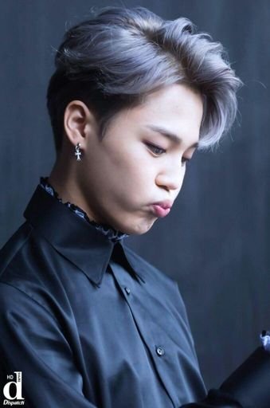
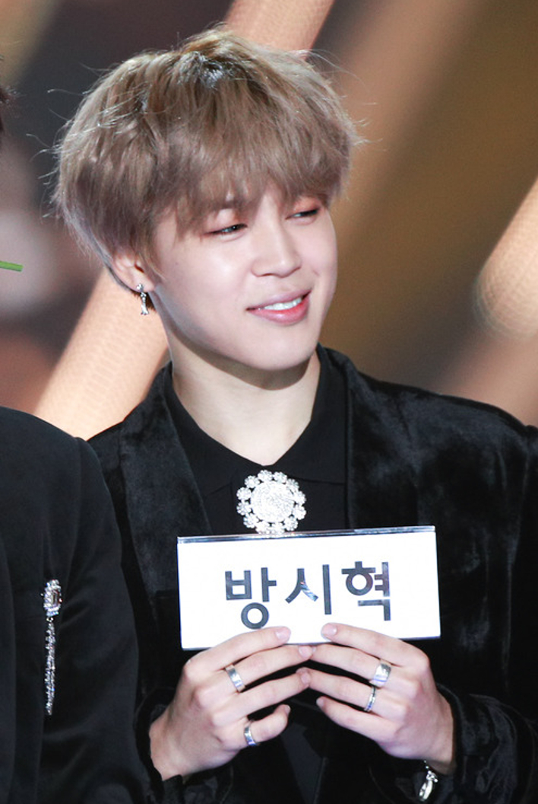

Пак Чи Мин родился 13 октября 1995 года в районе Кымджонгу, Пусан, Южная Корея. У него в семье, помимо родителей, есть младший брат. Обучался в Пусане в младшей школе Ходонга, позже учился в средней школе Ёнсана. Во время обучения в средней школе он начал посещать танцевальную академию, где изучал поппинг и локинг. Перед тем, как стать трейни, Чимин приступил к изучению контемпорари в старшей школе искусств Пусана и стал лучшим учеником в области современных танцев. После рекомендации учителя пойти на прослушивание, Пак стал частью Big Hit Entertainment. Пройдя кастинг в 2012 году, Чимин перевёлся в Корейскую школу искусств, окончив её двумя годами позже. Затем он поступил в Сеульский кибер-университет.


Главная